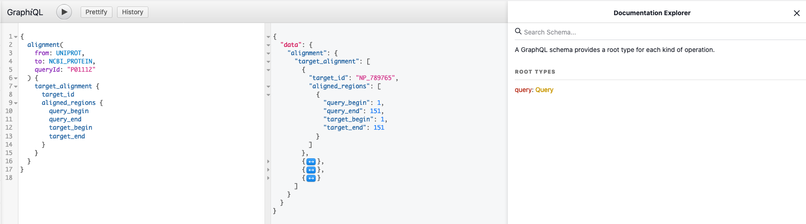

RCSB PDB Sequence Coordinates Server API
The RCSB PDB Sequence Coordinates Server compiles alignments between structural and sequence databases and integrates protein positional features from multiple resources. Alignment data is available for NCBI RefSeq (including protein and genomic sequences), UniProt and PDB sequences. Protein positional features are integrated from UniProt, CATH, SCOPe and RCSB PDB and collected from the RCSB PDB Data Warehouse. The server offers a GraphQL-based application programming interface (API) to access the integrated content.
- GraphQL-based API: use in-browser GraphiQL tool to refer to the full schema documentation
GraphQL-based API
GraphQL server operates on a single URL/endpoint, https://1d-coordinates.rcsb.org/graphql, and all
GraphQL requests for this service should be directed at this endpoint. GraphQL HTTP server handles POST method.
POST request
Requests must use HTTP POST with "application/json" as content type and GraphQL request details included as JSON in the request body, as defined in the proposed GraphQL over HTTP specification.
Variables
In the example above, the query arguments are written inside the query string. The query
arguments can also be passed as dynamic values that are called variables. The variable
definition looks like ($id: String!) in the example below. It lists a variable, prefixed by $,
followed by its type, in this case String (! indicates that a non-null argument is required).
The following is equivalent to the previous query:
Where:
With variable defined like so:
Query variables, should be sent as part of the POST request in an additional parameter
called variables.
A valid GraphQL POST request should use the application/json content type,
must include query, and may include variables encoded as a JSON document in the request body.
Here's an example for a valid body of a POST request:
Response
Regardless of the method by which the query and variables were sent, the response is returned in JSON format. A query might result in some data and some errors. The successful response will be returned in the form of:
Error Handling
Error handling in REST is pretty straightforward, we simply check the HTTP headers to get the status of a
response. Depending on the HTTP status code we get ( 200 or 404), we can easily
tell what the error is and how to go about resolving it. GraphQL server, on the other hand, will always
respond with a 200 OK status code. When an error occurs while processing GraphQL queries, the
complete error message is sent to the client with the response. Below is a sample of a typical GraphQL error
message when requesting a field that is not defined in the GraphQL schema:
Using GraphQL
GraphQL enables declarative data fetching and gives power to request exactly the data that is needed. The GraphQL end point defines two different queries for sequence alignments and positional features:
-
alignment -
annotations
Alignment Query
alignment(from: SequenceReference!, to: SequenceReference!, queryId: String!, range:[Int!])
fromandtoparameters codify the origin and target sequence databases, respectively, through a set of enumerated values
Next table describes the type of database identifiers used for each SequenceReference value
SequenceReference |
Database Identifier | Example |
|---|---|---|
NCBI_GENOME |
NCBI RefSeq Chromosome Accession | NC_000001 |
NCBI_PROTEIN |
NCBI RefSeq Protein Accession | NP_789765 |
UNIPROT |
UniProt Accession | P01112 |
PDB_ENTITY |
RCSB PDB Entity Id / CSM Entity Id | 2UZI_3 / AF_AFP68871F1_1 |
PDB_INSTANCE |
RCSB PDB Instance Id / CSM Instance Id | 2UZI.C / AF_AFP68871F1.A |
queryIdis a valid identifier in the sequence database defined byfrom
rangeis an optional integer list (2-tuple) to filter the alignment to a particular region
Annotations Query
annotations(reference: SequenceReference!, queryId: String!, sources: [Source!]!, range:[Int!], filters:[FilterInput!])
referenceandqueryIdindicate the sequence over which annotations will be mappedreferenceis a defined by the same enumerated values defined in thealignmentqueryIdparameterqueryIdparameter is a valid identifier of thereferencedatabase for whom the annotations will be requested
sourcesarray is an enumerated list defining the annotation collections to be requested
rangeis an optional integer list (2-tuple) to filter annotations that fall in a particular region
filtersis an optional array ofFilterInputthat can be used to select what annotations will be retrieved
-
operationis an enumerated value (OperationType = contains|equals) that defines the comparison method -
valueslist of allowed values -
sourceonly features with the sameSourcewill be filtered
Data Organization
Schemas used to encode sequence alignments and positional features are extensions of the data schemas used in the RCSB PDB Data API. The following definitions and structures are relevant to the way that alignments and annotations are encoded:
Alignments
-
AlignmentResponseis the root document used to encode alignments
-
query_sequencecontains the sequence of the database entry defined by defined byfromandqueryIdparameters (ref). This field isnullwhen genome scale alignments are requested (i.e.fromvalue isNCBI_GENOME) -
target_alignmentis a list ofTargetAlignmentdocuments that describes the different alignments between the sequence identified by thefromandqueryIdparameters (ref) and the database defined byto
-
TargetAlignmentis the document structure that describes a sequence alignment between the database entry defined byfromandqueryIdparameters (ref) and the entry defined bytoandtarget_id(see next set of bullet points)
-
target_ididentifies the entry from the database defined by the parametertothat is being aligned with the query (defined byfromandqueryIdparameters ref) -
target_sequencecontains the sequence of the database entry defined by defined bytoandtarget_id -
aligned_regionsis a list ofAlignedRegiondocuments that defines the sequence alignment through a collection of regions -
coveragedocument object that contains different scores related to the sequence alignment (seeCoverage) -
orientationinteger that identifies the DNA strand of genome alignments (1 positive strand / -1 negative strand)
-
AlignedRegionsequence alignments are defined by a list of regions that identify the beginning and end positions in the query and target sequences. When alignment data maps residues between protein sequences indexes are aligned one to one from the starting to ending position incrementally (see next Figure). When alignments involve genome sequences 3 consecutive nucleotide indexes are paired with a protein residue with the possible addition of 1 or 2 nucleotide indexes stored in a separte arrayexon_shiftto complete the final nucleotide triad (see Figure).
-
query_beginandquery_endidentify the start and end positions of the alignment in the query sequence (defined byfromandqueryIdparameters ref) -
target_beginandtarget_endidentify the start and end positions of the alignment in the target sequence (defined bytoandtarget_idparameters) -
exon_shiftlist of genomic indexes that are needed to complete the last nucleotide triad of a genome-protein sequence alignment (see next Figure)
exon_shift.
In this example this situation occurs in the first AlignedRegion where PDB Entity residue index 7 is mapped to genome nucleotide indexes [8,13,14].
-
Coverageobject that contains different scores related to the sequence alignments
-
query_coverageandquery_lengthcontain the percentage of the query sequence that has been aligned and its length (the query sequence is defined byfromandqueryIdparameters ref) -
target_coverageandtarget_lengthcontain the percentage of the target sequence that has been aligned and its length (the target sequence is defined by bytoandtarget_idparameters)
Annotations
-
[AnnotationFeatures]is the root list of objects that contains the requested annotations
-
Featurelist of documents that desribe positional features -
sourceenumerated value that identifies the provenance type of the positional features (ref) -
target_idsource entry identifier associated to the positional features
-
Featuredocument that describes a positional feature
-
feature_idIdentifier of the feature. When available the same Id as in theprovenance_sourceis used -
descriptionFree-form text describing the feature -
typeFeature category identifier (see Feature Type controlled vocabulary) -
feature_positionsList ofFeaturePositiondocuments that describes the location of the feature -
provenance_sourceOriginal database or software name used to obtain the feature -
nameName associated to the feature (e.g. protein domain name) -
valueNumerical value associated to the feature
-
FeaturePositiondocument that describes a segment where a feature occurs
-
beg_seq_idIndex at which this segment of the feature begins -
end_seq_idIndex at which this segment of the feature ends. If the positional feature maps to a single residue this field will benull -
beg_ori_idIndex at which this segment of the feature begins on the originalprovenance_source. Whenreferenceandsourcepoint to the same reference system this file will benull -
end_ori_idIndex at which this segment of the feature ends on the originalprovenance_source. If the positional feature maps to a single residue this field will benull. Whenreferenceandsourcepoint to the same reference system this file will benull -
valueA numerical value of the feature for this segment
Data Schema
JSON schemas for alignment and annotations services are built through references to the RCSB PDB Data API schemas
and extended following the same conventions.
GraphQL Schema
All GraphQL queries are validated and executed against the GraphQL schema. The GraphQL schema contains the elements that define sequence alignments and positional features.
You can use GraphiQL, which is a "graphical interactive in-browser GraphQL IDE", to explore GraphQL schema. It lets you try different queries, helps with auto completion and built-in validation. The collapsible Docs panel (Documentation Explorer) on the right side of the page allows you to navigate through the schema definitions. Click on the root Query link to start exploring the GraphQL schema.
Examples
This section contains additional examples for using the GraphQL-based RCSB PDB Sequence Coordinates Server API.
UniProt - PDB Entity alignment
Fetch alignments between a UniProt Accession and PDB Entities:
Computed Structure Model - NCBI protein alignment
Fetch alignments between a Computed Structure Model and NCBI proteins:
Mapping UniProt annotations to a PDB Instance
Fetch all positional features for a particular PDB Instance:
Human Chromosome 1 - PDB Entity alignment
Map all PDB Entities that fall in Human Chromosome 1:
Mapping PDB Instance ligands binding sites to Human Chromosome 1
Fetch protein-ligand binding sites for PDB Instances that fall within Human Chromosome 1:
Note, that label_asym_id is used to identify polymer entity instances.
Mapping a PDB Instance to NCBI RefSeq proteins
Fetch alignments between a PDB Instance and NCB RefSeq proteins:
Migration Guides
Migrating from 1D Coordinates Service
The following guide will help you migrate from 1D Coordinates Service API to Sequence Coordinates Service. This page describes the changes between both APIs.
License
Sequence Coordinates Server usage is available under the same terms and condition as RCSB PDB (see usage policies)
Acknowledgements
To cite this service, please reference:
- Joan Segura, Yana Rose, John Westbrook, Stephen K Burley, Jose M Duarte, RCSB Protein Data Bank 1D tools and services, Bioinformatics, Volume 36, Issue 22-23, 1 December 2020, Pages 5526–5527. doi: 10.1093/bioinformatics/btaa1012
Contact Us
Contact info@rcsb.org with questions or feedback about this service.